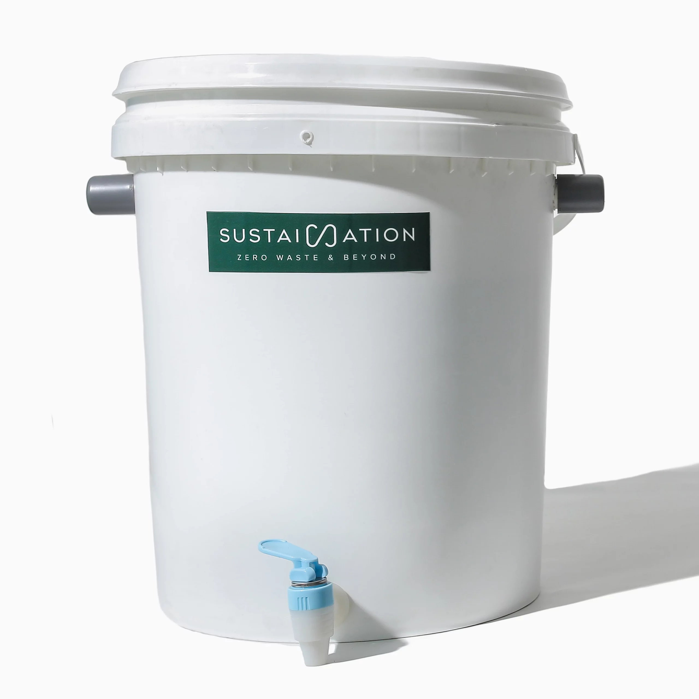

Komposter
Komposter adalah alat ramah lingkungan yang digunakan untuk mengolah sampah organik seperti sisa makanan, daun kering, dan kulit buah menjadi pupuk kompos alami. Dengan menggunakan komposter, kamu tidak hanya mengurangi jumlah sampah rumah tangga, tetapi juga menghasilkan pupuk yang bermanfaat untuk tanaman. Komposter rumah dirancang praktis, dapat digunakan di halaman, teras, atau bahkan di dapur untuk ukuran mini. Terbuat dari bahan yang kuat dan memiliki sirkulasi udara yang baik, proses pengomposan menjadi lebih cepat dan tidak menimbulkan bau jika digunakan dengan benar.
Harga: Rp68.000
Checkout Sekarang